Unit 10 – Reinforcement Learning: Infinite-Horizon Problems and Q-Learning
4SC000 Optimal Control and Reinforcement Learning
Slides · Exercises · Jupyter notebooks
1 Where this unit sits in the course
The course has two halves. Units 1 to 9 were about model-based optimal control: a model of the system was given to us, and the question was how to use it. We wrote the model as \(x_{k+1}=f_k(x_k,u_k,w_k)\), we wrote a cost that was additive over time, and from those two objects we derived policies – by the dynamic programming algorithm when the state space was small enough to enumerate, by the Riccati recursion when the model was linear and the cost quadratic, by discretization, by static optimization over a path, and by the approximate schemes of Unit 8 when none of those were tractable.
This unit opens the second half, Units 10 to 14, on reinforcement learning. The question is the same – find a policy that minimises an additive cost – but one thing is taken away: we are no longer given \(f_k\). All we have is the system itself, or a simulator of it, which we can run. We choose an action, we observe what happens and what it cost, and we have to learn a good policy from that stream of experience alone.
It is worth being clear about what does not change. The Bellman equation, the dynamic programming algorithm and the costs-to-go are not superseded by reinforcement learning; they are precisely the objects that reinforcement learning estimates from data. Everything proved in Part I remains the scaffolding of Part II, which is why this unit begins by rebuilding that scaffolding in the setting – infinite horizons and finite state spaces – where the learning algorithms are easiest to state and to prove correct.
2 The reinforcement learning formulation
The standard picture of the reinforcement learning problem is the loop in Fig. 1: an agent chooses an action, the environment responds with a new state and a reward, and the agent chooses again.
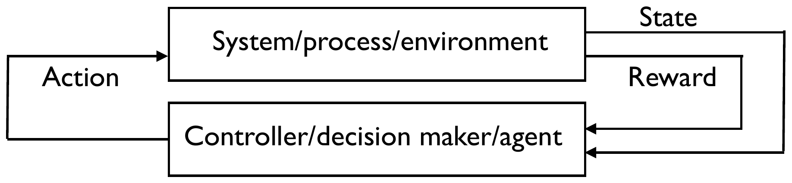
Three elements of that picture deserve comment, because each differs from the corresponding element in Part I.
The dynamic model. There is none. Only the real system, or a simulator that can be run, is available. For the purpose of analysis we will still write \(x_{k+1}=f(x_k,u_k,w_k)\) with \(w_k\) a disturbance, and every theorem below is stated in terms of such a model – but the algorithms are never allowed to use \(f\), only to observe its consequences. This distinction matters: the model is a device for proving that a learning algorithm converges, not an input the algorithm is given.
The reward, or cost, function. It encapsulates the goal, and it is obtained the same way as the transitions: through the agent’s interaction with the environment. It is additive over time, \(\sum_{k=0}^{h-1}g_k(x_k,u_k)+g_h(x_h)\), exactly as in Part I. One notational warning. In the reinforcement learning literature this quantity is usually a reward and is to be maximised; in this course it is a cost and is to be minimised. The two conventions differ by a sign, and we keep the control-theoretic one throughout so that everything connects directly to Units 1 to 9. When you read the RL literature, expect every \(\min\) below to be a \(\max\) there.
The goal. Find a policy – a function from states to actions – that minimises the cost, on the basis of data obtained by trial and error.
2.1 Three families of approach
Before narrowing to the particular algorithms of this unit, it is worth seeing the shape of the whole field, because almost everything in Units 10 to 14 falls into one of three families.
Approximation in value space. Approximate the optimal cost-to-go \(J^\star_{k+1}\) by some other function \(\tilde J_{k+1}\), and then act greedily with respect to it,
\[u_k = \underset{u_k \in U_k(x_k)}{\arg\min} \ \mathbb{E}\big[g_k(x_k,u_k,w_k)+\tilde J_{k+1}(f_k(x_k,u_k,w_k))\big] .\]
This is the one-step-lookahead form; multistep variants replace the single stage by a short horizon, exactly as in Unit 8. Typically \(\tilde J_{k+1}\) is drawn from a parametric class \(\tilde J_{k+1}(x_{k+1},r_{k+1})\), and the parameters \(r_{k+1}\) are fitted to training data. Readers of Unit 8 will recognise this as precisely the structure of rollout and MPC, with the difference that the approximating function is now learned rather than constructed from a base policy or a truncated horizon.
Approximation in policy space. Select the policy directly from a parameterized class, \(u_k=\mu_k(x_k,r_k)\) – a state feedback, or a neural network. There is no cost-to-go anywhere; instead one searches over the parameters \(r_k\), assessing each candidate by simulation, and typically using a gradient method to move towards parameters with a small overall cost. This is the family that Units 13 and 14 will develop under the names policy gradient and actor-critic.
Both at once. The two can be combined, approximating in value space and in policy space simultaneously; actor-critic methods are the standard example.
2.2 How the cost approximation is represented
When the approximation lives in value space and the setting is model-free, \(\tilde J_{k+1}\) is typically a neural network, trained on simulated trajectories. Fig. 2 shows the arrangement.
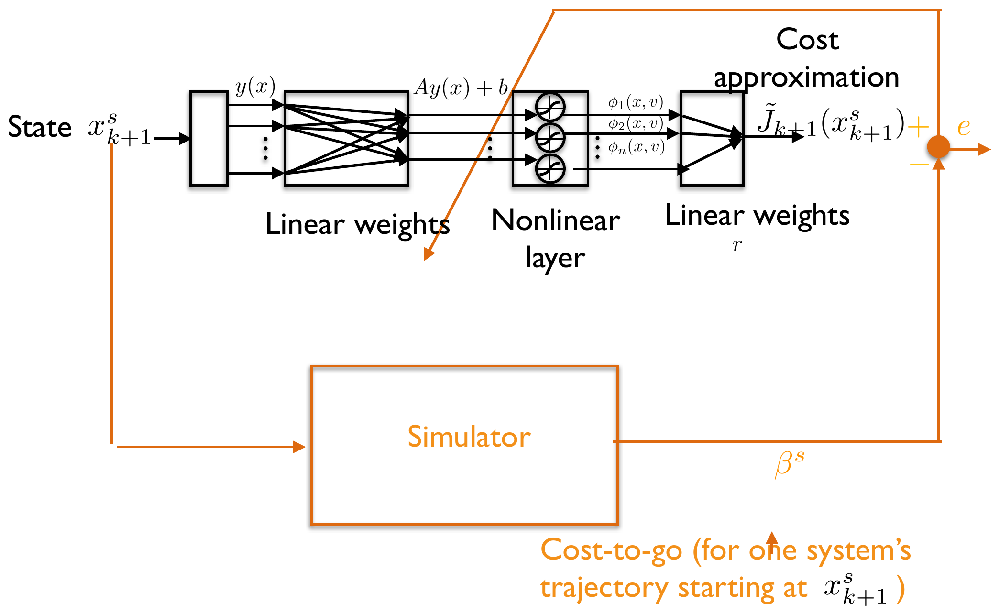
The important structural point is where the target comes from. The network is not fitted to known values of \(J^\star\) – those are what we do not have. It is fitted to numbers \(\beta^s\) produced by running the simulator forward from a sampled state and adding up what actually happened. Learning a cost-to-go is, at bottom, averaging simulated outcomes; the rest is the machinery that makes the averaging efficient.
2.3 The roadmap for Units 10 to 14
The methods differ sharply depending on whether the state and action spaces are finite or continuous, and the course is organised along that axis.
Finite state space, finite action space. Everything can be tabulated, and reinforcement learning can genuinely recover an optimal policy. This is the setting of Units 10 and 11, and the home of Q-learning and SARSA.
Continuous state space, finite action space. The value function must be approximated – by a neural network, say – but the minimisation over actions is still a search over a finite list. Unit 12: deep Q-learning, and SARSA with semi-gradients.
Continuous state and action spaces. Both the value function and the policy need parametric representations. Units 13 and 14: policy gradient, actor-critic and their recent variants.
Along the way other topics appear – LSTD, off-policy learning and importance sampling among them.
The present unit is the first box of that table, and it spends most of its length on the groundwork rather than on the learning algorithm itself. That is deliberate. Q-learning occupies about half a page; what takes work is understanding what it converges to, and that requires the infinite-horizon theory developed next.
3 Infinite-horizon problems
Until now the horizon has been finite: the problem ran from stage \(0\) to stage \(h\), and the optimal policy was time-varying, \(u_k=\mu_k(x_k)\), with a different \(\mu_k\) at each stage. That is an awkward object to learn. Each stage has its own function to estimate, and experience gathered at stage \(7\) says nothing about stage \(8\).
Infinite-horizon formulations avoid this. When the horizon is infinite – as in the infinite-horizon LQR of Unit 5 – the optimal policy is typically time-invariant, \(u_k=\mu(x_k)\): one function, and every transition ever observed is evidence about it. This is why reinforcement learning is almost always set up over an infinite horizon, and it is the reason this unit takes the detour.
There are four such formulations, all of which assume a time-invariant model and a time-invariant running cost,
\[x_{k+1}=f(x_k,u_k,w_k) \qquad k \in \{0,1,2,\dots\} .\]
The difficulty they all have to deal with is the same: an infinite sum of costs is in general infinite, and an objective that is \(+\infty\) for every policy ranks nothing. Each formulation is a different device for keeping the total finite.
Undiscounted, \(\ \sum_{k=0}^{\infty}\mathbb{E}\left[g(x_k,u_k)\right]\). The sum is kept finite by the running cost itself decaying to zero, which is what happens in the infinite-horizon LQR: the state is driven to the origin and \(x^\intercal Qx+u^\intercal Ru\) vanishes with it.
Stochastic shortest path, \(\ \sum_{k=0}^{\infty}\mathbb{E}\left[g(x_k,u_k)\right]=\mathbb{E}\left[\sum_{k=0}^{T-1}g(x_k,u_k)+\underbrace{g(x_T,\cdot)}_{=0}\right]\). The system eventually reaches a special terminal state \(x_T\), where it remains at zero cost; the infinite sum therefore has only finitely many nonzero terms, even though the number of them, \(T\), is random.
Discounted, \(\ \sum_{k=0}^{\infty}\mathbb{E}\left[\alpha^kg(x_k,u_k)\right]\) with \(0<\alpha<1\). The geometric weight makes the sum converge whenever the running cost is bounded, regardless of what the state does.
Average cost, \(\ \lim_{T\to\infty}\frac{1}{T}\mathbb{E}\left[\sum_{k=0}^{T-1}g(x_k,u_k)\right]\). Dividing by the horizon keeps the quantity finite – this is the natural formulation for problems like LQG, where the state keeps being kicked by noise and the cost per stage never decays. We do not develop it in the main text; it is treated in the appendix at the end of this unit.
The reason for enumerating all four is that the next two sections show something economical: the stochastic shortest path problem and the discounted problem are, mathematically, the same problem. Everything proved for one transfers to the other.
4 Shortest path problems
Many problems have dynamics and costs that do not depend explicitly on time,
\[x_{k+1}=f(x_k,u_k,w_k) \qquad k \in \{0,1,2,\dots\} \qquad \text{Prob}[w_k=\ell]=p_\ell^{x_k,u_k},\]
and in which the system evolves for an undetermined time \(T\) – possibly very long – until it reaches a set of terminal states \(\mathcal{X}\), that is \(x_T\in\mathcal{X}\). The cost accumulated along the way is
\[\mathbb{E}\left[\sum_{k=0}^{T-1}g(x_k,u_k)\right].\]
Because \(T\) is random, this looks like a different kind of object from the infinite sums above. It is not. Make two assumptions about the terminal set: that it is absorbing, \(x_k\in\mathcal{X}\implies x_{k+1}\in\mathcal{X}\), and that it is free, \(x_k\in\mathcal{X}\implies g(x_k,j)=0\) for every \(j\). Then every term of the infinite sum beyond stage \(T\) is zero, and
\[\sum_{k=0}^{\infty}\mathbb{E}[g(x_k,u_k)] = \mathbb{E}\left[\sum_{k=0}^{T-1}g(x_k,u_k)+\underbrace{g(x_T,\cdot)}_{=0}\right].\]
So a shortest path problem is an infinite-horizon problem; the random stopping time is a feature of the trajectories, not of the objective. This is what lets one theory cover both.
4.1 Finite-horizon problems are shortest path problems too
The same trick absorbs the entire finite-horizon theory of Part I. Take a finite-horizon problem, and allow it even to be time-varying,
\[\min_{u_k=\mu_k(x_k)} \mathbb{E}\left[\sum_{k=0}^{h-1}g_k(x_k,u_k)+g_h(x_h)\right] \qquad x_{k+1}=f_k(x_k,u_k,w_k).\]
Augment the state with the clock: let \(\bar x_k = (\bar x_{1,k},\bar x_{2,k}) = (x_k,k)\). The running cost in the augmented variables is
\[\bar g(\bar x_k,u_k,w_k)=\begin{cases} g_{x_{2,k}}(x_{1,k},u_k) & \text{if } 0\leq x_{2,k}\leq h-2\\ g_{h-1}(x_{1,h-1},u_k)+g_h(f_{h-1}(x_{1,h-1},u_{h-1},w_{h-1})) & \text{if } x_{2,k}=h-1\\ 0 & \text{if } x_{2,k}\geq h \end{cases}\]
which is time-invariant, and the states with \(\bar x_{2,k}\geq h\) are absorbing and free. The augmented problem is therefore a shortest path problem.
The point is not merely bookkeeping. The optimal policy \(\mu(\bar x_k)\) of the augmented problem is a single time-invariant function, yet because the clock is part of the state, it encodes exactly the time-varying policy \(\{\mu_0,\dots,\mu_{h-1}\}\) of the original problem. Nothing is lost, and we will use this at the end of the unit: proving that Q-learning works on finite-horizon problems becomes a special case of the shortest path theory, and is much easier than the general proof.
4.2 An example: catching Pac-man
A concrete shortest path problem, which will also be familiar from the stochastic dynamic programming of Unit 2. A ghost must catch Pac-man in the maze of Fig. 3 in the minimum expected time.
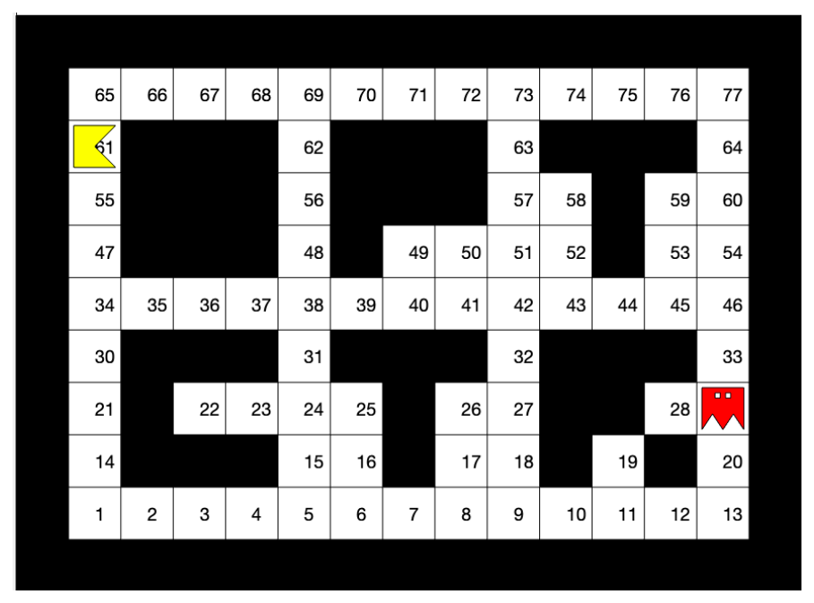
The state is the pair \(x_k=(x_{1,k},x_{2,k})\), with \(x_{1,k}\in\{1,\dots,77\}\) Pac-man’s cell and \(x_{2,k}\in\{1,\dots,77\}\) the ghost’s. The model is \(x_{k+1}=f(x_k,u_k,w_k)\), where \(u_k\) is the ghost’s decision and \(w_k\) captures whatever uncertainty there is in Pac-man’s moves; it must enforce that a capture is permanent, \(x_{1,k}=x_{2,k} \implies x_{1,k+1}=x_{2,k+1}\). The cost is
\[\sum_{k=0}^{\infty}\mathbb{E}[g(x_k,u_k)] \qquad g(x_k,u_k)=\begin{cases}1 & \text{if } x_{1,k}\neq x_{2,k}\\ 0 & \text{if } x_{1,k}=x_{2,k}\end{cases}\]
– one unit of cost for every stage in which Pac-man is still free, nothing thereafter. The total is the expected number of stages to capture, and minimising it is exactly “catch him as fast as possible”. Note how the two assumptions of the previous subsection are visible here: capture is absorbing, and capture is free.
4.3 Transition probabilities
From here on the state and action spaces are finite, so it is convenient to drop \(f\) and \(w\) and work directly with transition probabilities. Any model \(x_{k+1}=f_k(x_k,u_k,w_k)\) on a finite state space can be written as
\[p_{ij}(\ell)=\text{Prob}[x_{k+1}=j\mid x_k=i,\ u_k=\ell],\]
in which case the dynamics are simply \(x_{k+1}=w_k\) with \(\text{Prob}[w_k=j\mid x_k=i,\ u_k=\ell]=p_{ij}(\ell)\). The running cost is unchanged if it depends only on state and input; if it also depends on the disturbance it is averaged over the destination,
\[g(i,u)=\sum_j p_{ij}(u)\tilde g(i,u,j).\]
4.4 The standing assumptions
The results of this unit hold under three assumptions, which we state once and then use throughout.
The state belongs to one of \(n\) states plus a terminal state \(t=n+1\), so \(x\in\{1,2,\dots,n+1\}\). Once the terminal state is reached the system stays there at no cost: for every \(u\),
\[p_{n+1,n+1}(u)=1 \qquad g(n+1,u)=0 .\]
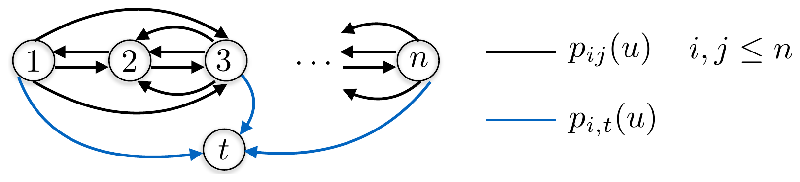
Finally, and most importantly: regardless of the initial state and of the policy, there is a positive probability that \(t\) is reached after some finite, fixed number of stages. This is what rules out a policy that wanders for ever and makes the problem well posed. It is the analogue, for shortest path problems, of the stabilizability conditions that made the infinite-horizon LQR of Unit 5 well posed.
4.5 Value iteration
The algorithm that computes the optimal cost-to-go – in infinite-horizon language, the value function – is value iteration.
Value iteration (shortest path). Given any initial values \(J_0(1),\dots,J_0(n)\), run for \(k=0,1,2,\dots\)
\[J_{k+1}(i)=\min_{u\in U(i)}\Big[g(i,u)+\sum_{j=1}^{n}p_{ij}(u)J_k(j)\Big] \qquad i\in\{1,\dots,n\}.\]
The iterates converge to values \(J^\star(i)\), so one stops when
\[\max_{i\in\{1,\dots,n\}}|J_{k+1}(i)-J_k(i)|<\epsilon .\]
This is nothing other than the dynamic programming algorithm of Unit 1, with different indexing. There the recursion ran backwards from a known terminal cost over a known number of stages; here the number of iterations is not known in advance, so the index counts iterations forwards and one stops when the values settle. If you do fix the number of stages at \(h\) and start from \(J_h(1),\dots,J_h(n)\), the recursion
\[J_{k-1}(i)=\min_{u\in U(i)}\Big[g(i,u)+\sum_{j=1}^{n}p_{ij}(u)J_k(j)\Big]=\min_{u\in U(i)}\mathbb{E}_w\big[g(i,u)+J_k(f(i,u,w))\big]\]
is literally the Unit 1 algorithm. The two are the same computation read in opposite directions.
The dynamic programming algorithm of Unit 1 had to be initialised at the true terminal cost \(J_h=g_h\); starting it from anything else would have given the wrong answer. Value iteration, by contrast, is said to converge “given any initial values \(J_0\)”. What accounts for the difference?
The finite-horizon algorithm computes an exact quantity in exactly \(h\) steps, so an error in the initial condition is an error in the problem being solved – it is the terminal cost, not a guess. Value iteration computes a fixed point. The iteration is a contraction towards the unique solution of the Bellman equation (below), so the influence of \(J_0\) decays as the iteration proceeds; after enough steps it has been forgotten. The price is that convergence is only asymptotic, which is why one needs a stopping test \(\epsilon\) rather than a step count.
This also explains the practical advice to initialise with the best guess available: it does not change the answer, only how many iterations are needed to get there.
4.6 The Bellman equation and the optimal policy
Value iteration converges, and what it converges to is the solution of a system of nonlinear equations. That system can also be solved by other means, which is why it is worth stating separately.
Theorem (Bellman equation, shortest path). Under the standing assumptions, the system of nonlinear equations
\[J^\star(i)=\min_{u\in U(i)}\Big[g(i,u)+\sum_{j=1}^{n}p_{ij}(u)J^\star(j)\Big] \qquad i\in\{1,\dots,n\}\]
admits a unique solution.
Uniqueness is the substantive claim. It is what guarantees that value iteration cannot converge to the wrong fixed point, and it is where the assumption that \(t\) is reachable from everywhere does its work.
Given the solution, the policy follows immediately.
Theorem (optimal policy, shortest path). The minimiser in the Bellman equation,
\[\mu(i)=\underset{u\in U(i)}{\arg\min}\Big[g(i,u)+\sum_{j=1}^{n}p_{ij}(u)J^\star(j)\Big] \qquad i\in\{1,\dots,n\},\]
is an optimal policy for the shortest path problem.
Note that this policy is time-invariant – a single function of the state – as promised at the start of the section.
5 Discounted problems
The discounted problem minimises \(\sum_{k=0}^{\infty}\mathbb{E}\left[\alpha^kg(x_k,u_k)\right]\) over a Markov chain with transition probabilities \(p_{ij}(u)\), as on the left of Fig. 5. At first sight it has nothing to do with the previous section: there is no terminal state, and trajectories never stop.
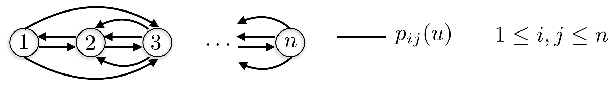
There is a construction, though, that turns it into a shortest path problem. Build a ‘twin’ problem by
multiplying every transition probability of the original problem by the discount factor \(\alpha\);
adding an extra terminal state \(t\) with zero terminal cost, reachable from every node with probability \(1-\alpha\);
keeping the same costs \(g(x_k,u_k)\), and zero cost at the terminal state.
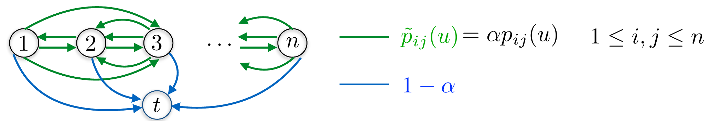
The twin problem satisfies the standing assumptions of the previous section: \(t\) is absorbing and free, and it is reached from any state with probability \(1-\alpha>0\) at every stage, hence within a finite number of stages with positive probability.
Now compare the two problems under the same policy. The state evolves identically in both until the twin problem terminates, since the twin’s transitions are the original’s conditioned on not terminating. The expected running cost incurred by the twin at stage \(k\) is therefore \(g(x_k,u_k)\) multiplied by the probability that \(t\) has not yet been reached, and that probability is exactly \(\alpha^k\). Summing over \(k\) gives \(\sum_k \alpha^k\mathbb{E}[g(x_k,u_k)]\) – the discounted cost. The two problems have the same value, for every policy.
So the discount factor is not merely a mathematical convenience for making sums converge: it is a probability of termination. A discounted problem with \(\alpha=0.99\) is a problem in which the world ends with probability \(1\%\) per stage. Every result of the previous section therefore carries over verbatim, with the one change that the sum is multiplied by \(\alpha\).
Value iteration (discounted cost). Given any \(J_0(1),\dots,J_0(n)\), run for \(k=0,1,2,\dots\)
\[J_{k+1}(i)=\min_{u\in U(i)}\Big[g(i,u)+\alpha\sum_{j=1}^{n}p_{ij}(u)J_k(j)\Big] \qquad i\in\{1,\dots,n\},\]
stopping when \(\max_i|J_{k+1}(i)-J_k(i)|<\epsilon\).
Theorem (Bellman equation, discounted cost). The system
\[J^\star(i)=\min_{u\in U(i)}\Big[g(i,u)+\alpha\sum_{j=1}^{n}p_{ij}(u)J^\star(j)\Big] \qquad i\in\{1,2,\dots,n\}\]
admits a unique solution.
Theorem (optimal policy, discounted cost). The minimiser
\[\mu(i)=\underset{u\in U(i)}{\arg\min}\Big[g(i,u)+\alpha\sum_{j=1}^{n}p_{ij}(u)J^\star(j)\Big] \qquad i\in\{1,\dots,n\}\]
is an optimal policy for the discounted problem.
In the twin construction, the probability of terminating at each stage is \(1-\alpha\). What does this say about the expected length of a twin trajectory as \(\alpha\to1\), and what does that imply for the number of value iterations needed to reach a given accuracy?
Termination at each stage is a Bernoulli trial with success probability \(1-\alpha\), so the number of stages before termination is geometric with mean \(1/(1-\alpha)\). At \(\alpha=0.9\) a trajectory lasts about \(10\) stages; at \(\alpha=0.999\), about \(1000\).
Value iteration has to propagate information backwards along those trajectories, and the error contracts by a factor \(\alpha\) per sweep, so reaching accuracy \(\epsilon\) takes on the order of \(\log\epsilon/\log\alpha \approx \log(1/\epsilon)/(1-\alpha)\) sweeps. Discount factors close to one therefore make the problem both more far-sighted and markedly more expensive – and, in the learning setting of the second half of this unit, they also mean each simulated trajectory is long, so data as well as computation becomes scarce. The choice of \(\alpha\) is a modelling decision with a direct computational price.
5.1 An example: when to sell an asset
A classic stopping problem. You own an asset – a car, say – and offers arrive over time; you must decide when to accept one.
Offers at time \(k\), written \(\bar w_k\), take values in a finite set: at time zero \(\bar w_0\in\{c_1,c_2,\dots,c_C\}\) with \(\text{Prob}[\bar w_0=c_i]=p_i\). The car depreciates at rate \(\alpha^k\) with \(0<\alpha<1\), so \(k\) months later the offers are \(\bar w_k\in\{\alpha^kc_1,\dots,\alpha^kc_C\}\) with \(\text{Prob}[\bar w_k=\alpha^kc_i]=p_i\). There may also be no offer at all in a given month: \(\sum_{i=1}^{C}p_i=1-p_0\), where \(p_0\) is the probability of no offer.
To put this in the standard form, scale the offers back to time zero: let \(w_k=\bar w_k/\alpha^k\), or \(w_k=N\) if there is no offer, and let \(u_k\in\{1\ (\text{sell}),\ 0\ (\text{not sell})\}\). Let \(x_k\) for \(k\geq1\) be the most recent scaled offer, or \(x_k=T\) if the car has already been sold. Then
\[x_{k+1}=\begin{cases}T & \text{if } x_k=T, \text{ or if } x_k\neq T \text{ and } u_k=1,\\ w_k & \text{otherwise,}\end{cases}\]
and we want the policy that maximises the expected discounted revenue \(\mathbb{E}\left[\sum_{k=0}^{\infty}\alpha^kg(x_k,u_k)\right]\) with
\[g(x_k,u_k)=\begin{cases}x_k & \text{if } x_k\neq T \text{ and } u_k=1,\\ 0 & \text{otherwise.}\end{cases}\]
This is a discounted problem with an absorbing state, so it is also a shortest path problem – and, because the only decision is when to stop, it belongs to the subclass known as optimal stopping problems. The infinite horizon is an idealisation of the realistic case that the car will be sold within some large but finite time.
One warning for readers comparing with the slides: the deck’s general convention is that costs are minimised, and this example is the one place where that convention collides with the problem’s natural statement. Here the quantity is a revenue and is maximised. Nothing hinges on it – replacing \(g\) by \(-g\) and every \(\max\) by a \(\min\) gives the identical policy – but the \(\max\) in the value iteration below is deliberate, not a slip.
Value iteration for this problem is
\[J_k(N)=0, \quad J_k(T)=0, \qquad J_{k+1}(x_k)=\max\Big\{x_k,\ \alpha\sum_{i=1}^{C}p_iJ_k(c_i)\Big\}, \quad x_k\neq N,\ x_k\neq T\]
– at each stage, compare what is on the table now with the discounted expected value of waiting. Taking \(c_i=10000+(i-1)100\) euros, \(C=101\), \(p_i=e^{-(c_i-\bar c)^2/2\bar v}\) with \(\bar c=15000\) and \(\bar v=2000^2\), the iterates behave as in Fig. 8.
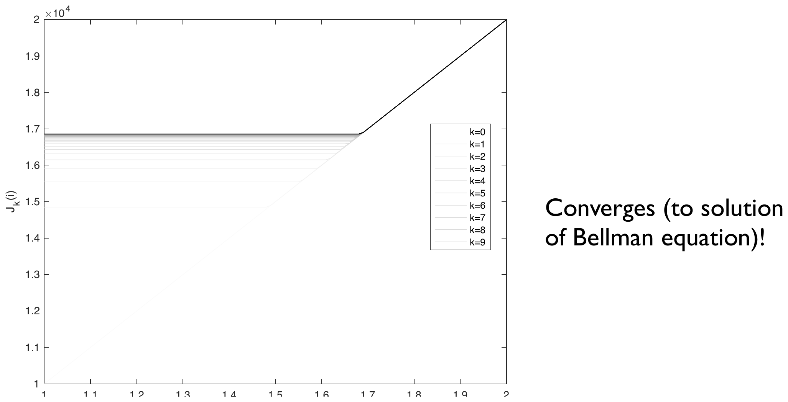
The policy converges with the values, and what it converges to is about as simple as a policy can be.
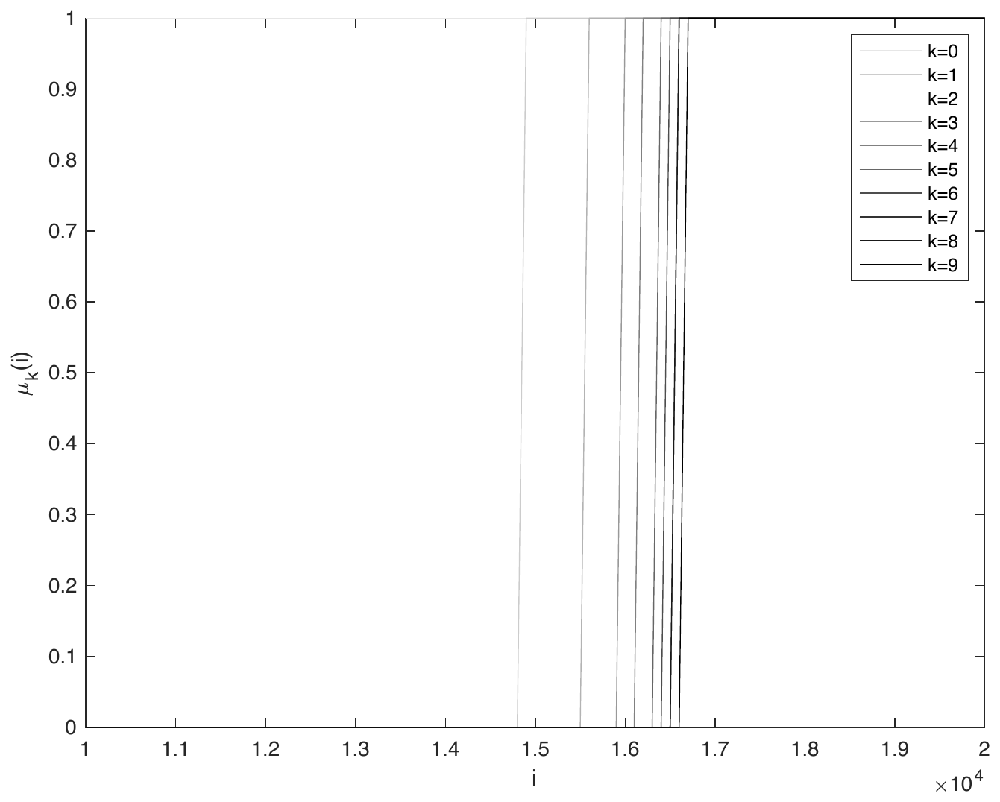
The optimal policy is a threshold rule: sell if the scaled offer exceeds a fixed number, otherwise wait. Run to convergence – 63 iterations, rather than the ten plotted – that number is \(16\,900\) euros, with a wait value of \(16\,857.9\); the tenth iterate shown above has only reached \(16\,700\). It is stationary – it does not depend on time – which is the payoff of the infinite-horizon formulation. A finite-horizon version of the same problem, such as the one in the appendix of Unit 2, has a threshold that moves as the deadline approaches; here there is no deadline, so every month looks like every other and one number suffices.
Notice also where the threshold sits: well above the mean offer of \(15\,000\). Waiting is worth something, and the threshold is the price at which that option value is exactly used up. The notebook A_10_AssetSellingValueIteration.ipynb prints both numbers, and A_10_stoppingtimeQLearning.ipynb recovers the same threshold without ever using the offer distribution.
6 Q-factors
Everything so far has been stated in terms of cost functions \(J_\mu(i)\) and optimal cost functions \(J^\star(i)=\min_\mu J_\mu(i)\) – the value functions, which play the role that costs-to-go played in the finite-horizon theory. There is an equivalent formulation in terms of Q-factors, which are the same quantities indexed by state and action:
\[\textbf{SP:}\quad Q_\mu(i,u)=g(i,u)+\sum_{j=1}^{n}p_{ij}(u)J_\mu(j), \qquad Q^\star(i,u)=g(i,u)+\sum_{j=1}^{n}p_{ij}(u)J^\star(j)\]
\[\textbf{DC:}\quad Q_\mu(i,u)=g(i,u)+\alpha\sum_{j=1}^{n}p_{ij}(u)J_\mu(j), \qquad Q^\star(i,u)=g(i,u)+\alpha\sum_{j=1}^{n}p_{ij}(u)J^\star(j)\]
In words, \(Q^\star(i,u)\) is the cost of taking action \(u\) once in state \(i\) and behaving optimally thereafter. Cost functions are defined on the state space; Q-factors are defined on the state-action space, which is larger by a factor of the number of actions.
Everything can be rewritten in these terms. Since \(J^\star(j)=\min_{v\in U(j)}Q^\star(j,v)\), the Bellman equations become
\[\textbf{SP:}\quad Q^\star(i,u)=g(i,u)+\sum_{j=1}^{n}p_{ij}(u)\min_{v\in U(j)}Q^\star(j,v)\]
\[\textbf{DC:}\quad Q^\star(i,u)=g(i,u)+\alpha\sum_{j=1}^{n}p_{ij}(u)\min_{v\in U(j)}Q^\star(j,v)\]
value iteration becomes
\[Q_{k+1}(i,u)=g(i,u)+(\alpha)\sum_{j=1}^{n}p_{ij}(u)\min_{v\in U(j)}Q_k(j,v)\]
with the \(\alpha\) present in the discounted case and absent in the shortest path case, and the optimal policy becomes
\[\mu^\star(i)=\underset{u\in U(i)}{\arg\min}\ Q^\star(i,u).\]
When the model is known, this buys nothing: the Q-factors store the same information as \(J^\star\), in more space, and are computed from the same \(p_{ij}(u)\). The reason to introduce them is visible in that last equation. Extracting the policy from \(Q^\star\) requires no model at all – it is a minimisation over a stored table. Extracting it from \(J^\star\) requires \(g(i,u)\) and \(p_{ij}(u)\), which in the model-free setting we do not have. The Q-factor formulation moves the model dependence out of the final step and into the quantity being learned, and that is exactly what makes a model-free algorithm possible.
A problem has \(n\) states and \(m\) actions available at each. Compare the storage needed for \(J^\star\) with that needed for \(Q^\star\), and compare the work needed to extract the greedy action at a given state from each of them, assuming in the \(J^\star\) case that the model is available.
\(J^\star\) needs \(n\) numbers, \(Q^\star\) needs \(nm\) – a factor \(m\) more storage. Extracting the greedy action at state \(i\) from \(Q^\star\) costs \(m\) comparisons. From \(J^\star\) it costs, for each of the \(m\) actions, a sum over the possible successor states: \(O(mn)\) in the worst case, or \(O(m\bar d)\) with \(\bar d\) the average number of reachable successors – plus access to \(g\) and \(p_{ij}\).
So the Q-factors trade memory for both speed and, far more importantly, independence from the model. In the tabular setting of this unit the factor \(m\) is affordable. In Unit 12, where the state space is continuous and the table is replaced by a network, the same trade-off reappears as a choice of what the network’s output layer represents – one number per state, or one per action.
7 Q-learning
We can now state the algorithm. It is one of the first and most famous methods in reinforcement learning, proposed by Watkins in 1989.1
Q-learning (discounted cost). Consider an infinitely long – in practice, sufficiently long – simulation under an arbitrary policy, producing a sequence of state-action pairs \((x_t,u_t)\), \(t\in\{0,1,2,\dots\}\). For each pair \((i,u)\) keep an estimate \(Q_t(i,u)\). At time \(t\), update only the estimate belonging to the pair actually visited, \((i,u)=(x_t,u_t)\):
\[Q_{t+1}(x_t,u_t)=\big(1-\gamma^t\big)Q_t(x_t,u_t)+\gamma^t\Big(g(x_t,u_t)+\alpha\min_{v\in U(x_{t+1})}Q_t(x_{t+1},v)\Big)\]
where the step sizes \(\gamma^t\in(0,1]\) are arbitrary. All other estimates are left unchanged: \(Q_{t+1}(i,j)=Q_t(i,j)\) for \((i,j)\neq(x_t,u_t)\).
Three features of this update are worth dwelling on.
It is a weighted average. Writing it as
\[Q_{t+1}(x_t,u_t)=\big(1-\gamma^t\big)\underbrace{Q_t(x_t,u_t)}_{\text{previous estimate}}+\gamma^t\underbrace{\Big(g(x_t,u_t)+\alpha\min_{v\in U(x_{t+1})}Q_t(x_{t+1},v)\Big)}_{\text{target}}\]
makes the structure plain: the new estimate is a blend of what we believed and what this one transition suggests. The step size \(\gamma^t\) decides how much notice to take of the new evidence.
The target is value iteration. Compare the target with the Q-factor value iteration of the previous section,
\[Q_{k+1}(x_k,u_k)=g(x_k,u_k)+\alpha\min_{v\in U(x_{k+1})}Q_k(x_{k+1},v).\]
They are the same expression – except that value iteration averages over all successor states \(j\) using \(p_{ij}(u)\), whereas Q-learning uses the single successor \(x_{t+1}\) that actually occurred. Q-learning is value iteration with the expectation replaced by a sample. That is the whole idea, and it is why no model is needed: the environment supplies the sample.
The exploration policy is arbitrary. The data may be generated by any policy at all – this is the exploration policy – while the policy being learned, the target policy, is the optimal one. An algorithm with this property is called off-policy, and it is a strong property: it means we may explore recklessly, even randomly, and still converge to the optimal Q-factors. (Unit 11’s SARSA will not have it, and the contrast is instructive.) The one thing the exploration policy must do is visit everything, which is the first condition of the convergence theorem below.
A practical note: instead of one infinitely long simulation one can run many finite-length ones and concatenate them, which is usually what happens in practice. And although a constant step size is the obvious choice, it does not give convergence; the step size has to decrease, in a particular way, which the next section makes precise.
7.1 Stochastic approximation
The reason a decreasing step size is needed has nothing to do with control, and everything to do with estimating a mean from samples.
Stochastic approximation. Let \((r_1,r_2,r_3,\dots)\) be independent and identically distributed random variables whose mean \(\mu\) we wish to determine, and consider the recursion
\[z_{t+1}=(1-\gamma^t)z_t+\gamma^tr_t .\]
If
\[\gamma^t>0 \qquad \sum_{t=0}^{\infty}\gamma^t=\infty \qquad \sum_{t=0}^{\infty}(\gamma^t)^2<\infty\]
then \(\lim_{t\to\infty}z_t=\mu\).
The two sum conditions are the heart of it, and they pull in opposite directions. \(\sum\gamma^t=\infty\) says the steps must not shrink so fast that the iterate stalls before reaching the mean – there must always be enough movement left to travel any remaining distance. \(\sum(\gamma^t)^2<\infty\) says they must shrink fast enough that the accumulated noise is finite – that the iterate eventually stops being jostled by individual samples. The canonical choice satisfying both is \(\gamma^t=1/t\), and with that choice the recursion is exactly the incremental sample mean,
\[\frac{1}{t}\sum_{\ell=1}^{t}r_\ell \qquad\text{written as}\qquad z_{t+1}=\Big(1-\frac{1}{t}\Big)z_t+\frac{1}{t}r_t .\]
So the sample mean is a special case, and the theorem says that a whole family of averaging schemes converges, not just that one.
That generality matters in practice, because the sample mean is not always what one wants. Fig. 10 compares the incremental sample mean with constant step sizes in two situations.
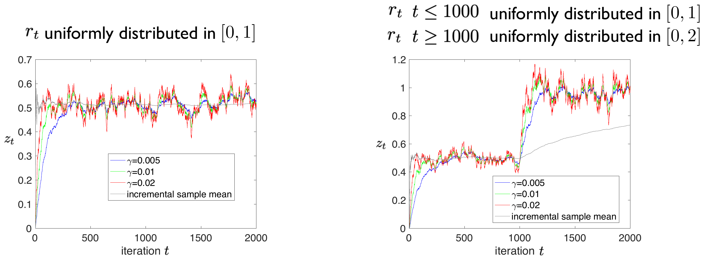
The trade-off with a constant \(\gamma\) is the familiar one: small \(\gamma\) gives an accurate steady state but slow adaptation; large \(\gamma\) the reverse. This is not an idle aside for Q-learning, because the target of the Q-learning update contains \(Q_t\) itself and therefore is a quantity whose distribution changes as learning proceeds – which is part of why the theory needs the conditions above while practice often uses a constant step anyway.
7.2 Q-learning for shortest path problems
The shortest path version differs only in bookkeeping. Trajectories now terminate, so instead of one infinite run there are infinitely many – in practice, sufficiently many – finite simulations \(s\in\{1,2,\dots\}\), each a sequence \((x_k^s,u_k^s)\) with \(k\in\{0,1,\dots,K^s\}\) and \(K^s\) the time at which simulation \(s\) reaches the terminal state. These are concatenated into one index,
\[\{(x_t,u_t)\}=\big((x_0^1,u_0^1),\dots,(x_{K^1}^1,u_{K^1}^1),(x_0^2,u_0^2),\dots,(x_{K^2}^2,u_{K^2}^2),(x_0^3,u_0^3),\dots\big),\]
and the update, applied at every index \(t\neq K^s\), is
\[Q_{t+1}(x_t,u_t)=\big(1-\gamma^t\big)Q_t(x_t,u_t)+\gamma^t\Big(g(x_t,u_t)+\min_{v\in U(x_{t+1})}Q_t(x_{t+1},v)\Big),\]
identical to the discounted case except for the absent \(\alpha\). The exclusion \(t\neq K^s\) matters: at the last index of a simulation the “next state” would be the first state of the next simulation, which is not a real transition.
7.3 Convergence
Theorem (convergence, discounted cost). The Q-factors of the Q-learning algorithm converge to the optimal ones if
- all state-action pairs are generated in the simulation infinitely often, and
- the step size satisfies \(\gamma^t>0\), \(\sum_{t=0}^{\infty}\gamma^t=\infty\) and \(\sum_{t=0}^{\infty}(\gamma^t)^2<\infty\).
Once the optimal Q-factors are known, the optimal policy is immediate, \(\mu(i)=\underset{u\in U(i)}{\arg\min}Q^\star(i,u)\).
The two conditions are exactly what one would guess. The second is the stochastic approximation requirement, applied to each state-action pair separately. The first is what makes that application legitimate: an estimate that is updated only finitely often cannot converge to anything, so every pair must keep being revisited. This is the formal statement of the need for exploration, and it is why a policy that greedily follows the current estimates is a poor exploration policy – it may never try the action that turns out to be best.
A similar result holds for the shortest path case. The full proof for discounted problems needs machinery we will not develop. But the finite-horizon case – which, by the state-augmentation argument earlier in this unit, is a special case of the shortest path problem – can be proved with what we already have, and the proof is worth seeing because it shows exactly where the convergence comes from.
7.4 Q-learning for finite-horizon problems
Consider a finite-horizon problem with unknown model,
\[\min_{u_k=\mu_k(x_k)}\mathbb{E}\left[\sum_{k=0}^{h-1}g_k(x_k,u_k)+g_h(x_h)\right] \qquad x_{k+1}=f_k(x_k,u_k,w_k),\]
and run infinitely many simulations \(s\in\{1,2,\dots\}\) under an arbitrary policy, each of length \(h\) (the final action \(u_h^s\) being irrelevant), concatenated as before. Because the problem is time-varying, Q-factors are now indexed by stage as well: \(Q(k,i,u)\), with estimates \(Q_t(k,i,u)\) at update \(t\). The update is
\[Q_{t+1}(k,x_t,u_t)=\big(1-\gamma^t\big)Q_t(k,x_t,u_t)+\gamma^t\Big(g_k(x_t,u_t)+\min_{v\in U(x_{t+1})}Q_t(k+1,x_{t+1},v)\Big), \quad k\neq h-1\]
\[Q_{t+1}(h-1,x_t,u_t)=\big(1-\gamma^t\big)Q_t(h-1,x_t,u_t)+\gamma^t\big(g_{h-1}(x_t,u_t)+g_h(x_{t+1})\big), \quad k=h-1\]
with \(\gamma^t\in(0,1]\) arbitrary and all other estimates unchanged. The second line is the first with the terminal cost in place of the lookahead, since there is no stage \(h+1\) to look ahead to.
7.5 Why it converges
The argument is an induction backwards over the stages, and each step is an application of the stochastic approximation result.
Step 1. Fix a state-action pair \((x_{h-1},u_{h-1})=(i,u)\) at the last decision stage \(h-1\). By assumption it is visited infinitely often, and each time it is visited its estimate is updated by
\[Q_{t+1}(h-1,i,u)=\big(1-\gamma^t\big)Q_t(h-1,i,u)+\gamma^t\big(g_{h-1}(i,u)+g_h(f(i,u,w_{h-1}))\big).\]
Look at what multiplies \(\gamma^t\). The only random quantity in it is the disturbance \(w_{h-1}\), and successive visits to \((i,u)\) draw independent copies of it. So this is precisely the recursion of the stochastic approximation theorem, averaging the random variable \(g_{h-1}(i,u)+g_h(f(i,u,w_{h-1}))\). Therefore \(Q_t(h-1,i,u)\) converges to its mean,
\[g_{h-1}(i,u)+\mathbb{E}\left[g_h(f(i,u,w_{h-1}))\right],\]
which is the true Q-factor at stage \(h-1\).
Step 2. Take \(t\) large enough that \(Q_t(h-1,i,u)\) has converged for every \((i,u)\). Then
\[\tilde J_{h-1}(x_{h-1})=\min_{v\in U(x_{h-1})}Q_t(h-1,x_{h-1},v)=\min_{v\in U(x_{h-1})}g_{h-1}(x_{h-1},v)+\mathbb{E}\left[g_h(f(x_{h-1},v,w_{h-1}))\right]\]
is the optimal cost-to-go at stage \(h-1\), and from the point of view of stage \(h-2\) it plays exactly the role of a terminal cost.
Step 3. Fix a pair \((x_{h-2},u_{h-2})=(i,u)\) at stage \(h-2\). It too is visited infinitely often, and its update reads
\[Q_{t+1}(h-2,i,u)=\big(1-\gamma^t\big)Q_t(h-2,i,u)+\gamma^t\Big(g_{h-2}(i,u)+\underbrace{\min_v Q_t(h-1,f(i,u,w_k),v)}_{\tilde J_{h-1}(f(i,u,w_k))}\Big).\]
By Step 2 the underbraced quantity is a fixed function of the disturbance, so again the thing being averaged is a random variable driven only by \(w_k\), and Steps 1 and 2 apply verbatim: \(Q_t(h-2,i,u)\) converges to the optimal values.
Step 4. Repeat for stages \(h-3\), \(h-4\), and so on. Every \(Q_t(k,i,u)\) converges to the optimal value.
The structure of the argument is the structure of the dynamic programming algorithm itself. Dynamic programming sweeps backwards from the terminal cost, solving one stage at a time; this proof does the same, except that each stage is solved by averaging samples instead of by computing an expectation, and “solved” means “converged in the limit” rather than “computed exactly”. Q-learning is the dynamic programming algorithm with every expectation replaced by an average over experience.
Note also where the two conditions enter: the step-size conditions make each individual average converge, and the infinite-visitation condition makes every stage-state-action triple get its own average. Neither is dispensable.
Step 3 relies on Step 2 having already converged. Suppose instead one tried to argue directly that \(Q_t(0,i,u)\), at the first stage, converges. What goes wrong?
The target for a stage-\(k\) update contains \(\min_v Q_t(k+1,\cdot,v)\) – the current estimate at the next stage. If that estimate is still moving, the quantity being averaged is not an i.i.d. sequence with a fixed mean: its distribution changes as \(Q_t(k+1,\cdot,\cdot)\) changes, and the stochastic approximation theorem does not apply.
Going backwards fixes this. At the last stage the target contains no Q-factors at all, only \(g_{h-1}\), \(g_h\) and the disturbance, so it is genuinely i.i.d. and the theorem applies. Once that stage has settled, the stage before it has a fixed target, and so on. The dependence runs one way, and the proof has to follow it.
This is also why the algorithm is slow in practice. Information about the terminal cost has to propagate back one stage at a time, and each stage needs many visits before it settles – so the number of simulations needed grows with the horizon, not just with the size of the state space.
8 Discussion: a bittersweet result
It is worth being clear about what has and has not been achieved.
On the positive side, the result is remarkable. For any Markov decision problem in discrete time – and, by a suitable discretization, in continuous time – Q-learning will solve it, in the sense of converging to an optimal policy, without ever being given a model. One algorithm, two mild conditions, no structural assumptions about \(f\) or \(g\) beyond finiteness. Set against the careful case-by-case work of Units 5 to 9, where each new structure demanded its own method, that is a striking degree of generality.
On the negative side, Q-learning is often badly data inefficient. “Sufficiently many iterations” in the proof typically means a tremendous number of simulations, even for small problems, for the reason the last exercise identified: information propagates backwards one stage per sweep of visits, and every state-action pair needs many visits of its own. There are methods that use data far more efficiently, at the cost of giving up the optimality guarantee – and much of Units 11 to 14 is about them.
The honest summary, then, is that of the two curses the course has been fighting, Q-learning solves neither. The curse of dimensionality is untouched: the table has \(nm\) entries, and for a continuous state space discretized finely enough, that is hopeless – which is exactly the problem Unit 12 takes up by replacing the table with a function approximator. And the curse of data has been introduced rather than solved: we have traded the need for a model for the need for an enormous number of interactions. The result is of great theoretical interest and limited direct practical use, and it is the right foundation precisely because everything that follows can be understood as an attempt to relax one of those two curses.
9 Summary
Reinforcement learning asks the question of Part I – find a policy minimising an additive cost – without a model: only the system itself, or a simulator, is available. The field divides into approximation in value space, approximation in policy space, and combinations of the two; this unit and the next treat the case where the state and action spaces are finite and everything can be tabulated.
Infinite-horizon formulations are the natural setting, because the optimal policy is then time-invariant and every observed transition is evidence about the same function. Four formulations keep the infinite sum finite in different ways; two of them, the stochastic shortest path and the discounted problem, turn out to be the same problem – the discount factor is a per-stage probability of termination – and a finite-horizon problem becomes a third instance of the same thing once the clock is folded into the state.
For these problems, value iteration converges to the unique solution of a Bellman equation, and the minimiser in that equation is an optimal policy. Rewriting all of this in terms of Q-factors changes nothing mathematically but moves the model dependence out of the policy extraction step, which is what makes a model-free algorithm possible at all.
Q-learning is then value iteration with the expectation over successor states replaced by the single successor that actually occurred. It converges to the optimal Q-factors provided every state-action pair is visited infinitely often and the step sizes satisfy the stochastic approximation conditions – and the proof, in the finite-horizon case, is the dynamic programming algorithm with averaging in place of expectation.
The guarantee is strong and the practice is hard. Q-learning is correct but data hungry, and it does nothing about the curse of dimensionality. The remaining units of Part II are about what to do instead.
The fourth infinite-horizon formulation,
\[J(i)=\lim_{T\to\infty}\frac{1}{T}\mathbb{E}\left[\sum_{k=0}^{T-1}g(x_k,\mu(x_k))\mid x_0=i\right],\]
is the natural one for problems in which the state never settles – LQG being the standard example. It is not used in the rest of the course, but it rounds out the picture, and the route to it is the same reduction-to-shortest-path used twice already.
Decomposing the cost. Assume there is one state, by convention state \(n\), which is visited within a finite number of initial stages with positive probability. Then \(n\) is recurrent: the system keeps returning to it. Let \(s_\ell\) be the times at which the state is \(n\), and suppose there are \(L+1\) of them within \(\{0,1,\dots,T-1\}\).
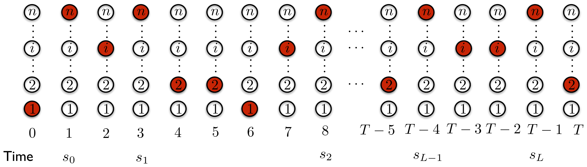
Writing \(J_T(i)=\mathbb{E}\left[\sum_{k=0}^{T-1}g(x_k,\mu(x_k))\mid x_0=i\right]\), the visits cut the sum into three parts,
\[J_T(i)=\underbrace{\mathbb{E}\left[\sum_{k=0}^{s_0-1}g\ \Big|\ x_0=i\right]}_{(1)}+\underbrace{\sum_{\ell=0}^{L-1}\mathbb{E}\left[\sum_{k=s_\ell}^{s_{\ell+1}-1}g\ \Big|\ x_{s_\ell}=n\right]}_{(2)}+\underbrace{\mathbb{E}\left[\sum_{k=s_L}^{T-1}g\ \Big|\ x_{s_L}=n\right]}_{(3)}.\]
Implications. In the limit \(J(i)=\lim_{T\to\infty}J_T(i)/T\), terms (1) and (3) contribute nothing – each is a single finite segment divided by a horizon going to infinity. Term (2) is a sum of \(L\) identical quantities, so
\[J(i)=\lim_{T\to\infty}\frac{L}{T}\mathbb{E}\left[\sum_{k=s_0}^{s_1-1}g(x_k,\mu(x_k))\ \Big|\ x_{s_0}=n\right]=\frac{1}{\mathbb{E}[s_1-s_0]}\mathbb{E}\left[\sum_{k=s_0}^{s_1-1}g(x_k,\mu(x_k))\ \Big|\ x_{s_0}=n\right].\]
Three consequences follow. First, the average cost does not depend on the initial state: for any policy \(\mu\) it is the same number \(\lambda_\mu\) for every \(i\) – the initial transient is averaged away. Second, it depends only on what happens between two visits to \(n\). Third, it can be written as
\[\lambda_\mu=\frac{C_{nn}(\mu)}{N_{nn}(\mu)}\]
where \(C_{nn}(\mu)\) is the expected cost from \(n\) until the first return to \(n\), and \(N_{nn}(\mu)=T/L\) the expected number of stages to return.
Reduction to a shortest path problem. We want a shortest path problem that starts at \(n\) and ends at \(n\) – but a terminal state must transition only to itself, so \(n\) cannot play both roles. The fix is to split it: introduce a terminal state \(t\), and redirect every transition into \(n\) so that it goes into \(t\) instead, with the same probabilities.
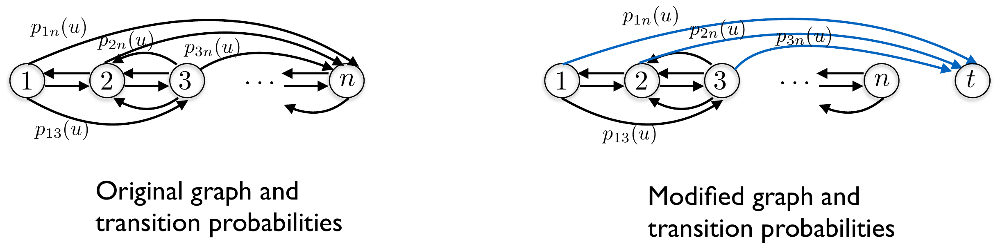
The costs are modified from \(g(i,u)\) to \(g(i,u)-\lambda^\star\), where
\[\lambda^\star=\min_\mu\lambda_\mu=\min_\mu\frac{C_{nn}(\mu)}{N_{nn}(\mu)}.\]
Why subtract \(\lambda^\star\)? Because for any \(\mu\) we have \(\lambda_\mu=C_{nn}(\mu)/N_{nn}(\mu)\geq\lambda^\star\), hence
\[C_{nn}(\mu)-\lambda^\star N_{nn}(\mu)\geq0, \qquad\text{with equality when } \mu=\mu^\star .\]
So the optimal policy is the one minimising \(C_{nn}(\mu)-\lambda^\star N_{nn}(\mu)\) – and that is exactly the shortest path problem just constructed, since
\[\min_\mu\mathbb{E}\left[\sum_{k=s_0}^{s_1-1}\big(g(x_k,\mu(x_k))-\lambda^\star\big)\ \Big|\ x_{s_0}=n\right]=\min_\mu\ C_{nn}(\mu)-\lambda^\star\,\mathbb{E}[s_1-s_0].\]
The Bellman equation. For the modified shortest path problem it reads
\[h^\star(i)=\min_{u\in U(i)}\Big[g(i,u)-\lambda^\star+\sum_{j=1}^{n-1}p_{ij}(u)h^\star(j)\Big],\]
the sum stopping at \(n-1\) because the transitions from \(i\) into \(n\) now go to \(t\) instead. Since \(h^\star(n)=C_{nn}(\mu^\star)-\lambda^\star N_{nn}(\mu^\star)=0\), the term \(j=n\) may be added back at no cost, giving the standard form.
Theorem (Bellman equation, average cost). The optimal average cost \(\lambda^\star\) is the same for all initial states and, together with some vector \((h^\star(1),\dots,h^\star(n))\), satisfies
\[\lambda^\star+h^\star(i)=\min_{u\in U(i)}\Big[g(i,u)+\sum_{j=1}^{n}p_{ij}(u)h^\star(j)\Big] \qquad i\in\{1,2,\dots,n\}\]
with \(h^\star(n)=0\).
Here \(\lambda^\star\) is the cost per stage in steady state, and \(h^\star(i)\) – the bias, or differential cost – measures how much better or worse it is to start in state \(i\) than in the reference state \(n\). The pair carries the information that a single value function carries in the other formulations.
Numerical method. To obtain \(\lambda^\star\), \(h^\star\) and the optimal policy: first run ordinary value iteration
\[J_{k+1}(i)=\min_{u\in U(i)}\Big[g(i,u)+\sum_{j=1}^{n}p_{ij}(u)J_k(j)\Big]\]
and compute \(\lambda^\star=\lim_{k\to\infty}J_k(i)/k\) – the values themselves diverge, but they diverge linearly, at the rate \(\lambda^\star\). Then solve the modified shortest path problem above, with the now-known \(\lambda^\star\), by value iteration again.
Footnotes
C. Watkins, Learning from delayed rewards, PhD thesis, Cambridge University, 1989.↩︎